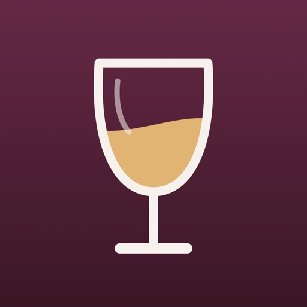
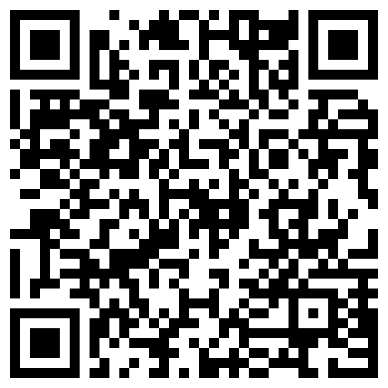

Pass the GlassProef het Verschil: Malbec · QURK Wijn
Deze wijnbox proef je met Pass the Glass. De wijnen staan meteen klaar: proevers erbij, en de telefoon gaat rond.
You taste this wine box with Pass the Glass. The wines are ready right away: add the tasters and pass the phone around.
Gratis in de App StoreFree on the App Store
Open Pass the Glass, kies Nieuwe proeverij › Scan wijnbox en scan de QR-code op het kaartje nog een keer.
Open Pass the Glass, choose New Tasting › Scan Wine Box and scan the QR code on the card again.
Proef het Verschil: Malbec · QURK Wijn
Proef het Verschil: Malbec · QURK Wijn
Een proeverij met Pass the Glass doe je met één telefoon die rondgaat. Scan deze QR-code met de camera van je telefoon.
A Pass the Glass tasting uses one phone that goes around the table. Scan this QR code with your phone's camera.

passtheglass-box 1 tasting: Proef het Verschil: Malbec shop: QURK Wijn currency: EUR wine: L'allée de Chambert BIO country: FR type: red producer: Château de Chambert photo: https://passtheglass.app/box/qurk-proef-het-verschil-malbec-4rfcnnh8tv/etiketten/lallee-de-chambert-bio.jpg notes: Biologische Malbec, met zwarte bes, wilde aardbei en specerijen. Serveren op 16–18°C. Lekker bij: eendenborst, of cassoulet. wine: Colección Malbec country: AR type: red producer: Michel Torino photo: https://passtheglass.app/box/qurk-proef-het-verschil-malbec-4rfcnnh8tv/etiketten/malbec-michel-torino-coleccion.jpg notes: Zwarte pruim, donkere kers en een zachte afdronk. Serveren op 16–18°C. Lekker bij: een steak van de grill. end